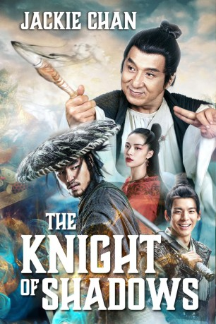

#11703 The Knight of Shadows
 
 IMDB-Wertung: 4.9 / 10
IMDB-Wertung: 4.9 / 10  Metascore: 0
Metascore: 0 
Dämonenjäger Pu Songling beschützt die Menschen vor bösen Kreaturen der Unterwelt. Dabei erhält er Unterstützung von einer Horde gutmütiger Dämonen und dem angehenden Polizisten Fei. Beim Versuch, das Rätsel um die verschwundenen Töchter des Bezirks zu lösen, treffen Songling und seine Helfer auf einen anderen geheimnisvollen Dämonenjäger, den eine tragische Geschichte mit einer schönen Dämonin verbindet…
Jahr: 2019
Dauer: 109 Minuten
FSK:
Land: China Studio: Batrax EntertainmentTonspuren: DD5.1 - ,
Untertitel: Deutsch,
Auflösung: 1080p (1920x812) Größe: 4157 MB
Genre: Action, Fantasy, Liebe
Regisseur: Vash
Drehbuch: Boham Liu
Soundtrack: Jinyan Zhai, Zhao Zhao
Darsteller:
 Jackie Chan als Pu Songling
Jackie Chan als Pu Songling- Elane Zhong als Nie Xiaoqian
- Ethan Juan als Ning Cai Cheng
 Peng Lin als
Peng Lin als - Po-Hung Lin als
- Charles Luu als
- Lance Luu als
- Mark Luu als
- Changjiang Pan als
- King-Tan Yuen als
- Shan Qiao als
- Yuan Jiang als Miss Chu
Datei: X:\HD-Eastern-Classic(A-M)\Knight of Shadows, The (2019, FSK, 1920x812).mkv seit 31.08.2019
Festplatte: HD Eastern+Western
 Es gibt insgesamt 63 Filme in der Gruppe 'HD-Eastern-Classic(A-M)'
Es gibt insgesamt 63 Filme in der Gruppe 'HD-Eastern-Classic(A-M)'